Overview
I'm a student in the Bachelor of Applied Technology, Geographic Information Systems (BGIS) program at SAIT, building practical skills in spatial data collection, geodatabase design, cartographic design, and spatial analysis. This portfolio collects project work as I complete each semester, starting with first and second semester coursework.
I'm currently looking for an entry-level or internship GIS position where I can apply these skills - spatial analysis, cartographic design, and data-driven mapping - on real projects.
- Program
- BAT - Geographic Information Systems, SAIT
- Currently
- Semester 2
- Core tools
- ArcGIS Pro, QGIS, Python, SQL
- Based in
- Calgary, AB
Featured work
Three things most worth a look right now: an active capstone project, a pair of live web apps, and the story map that ties Semester 1 together.
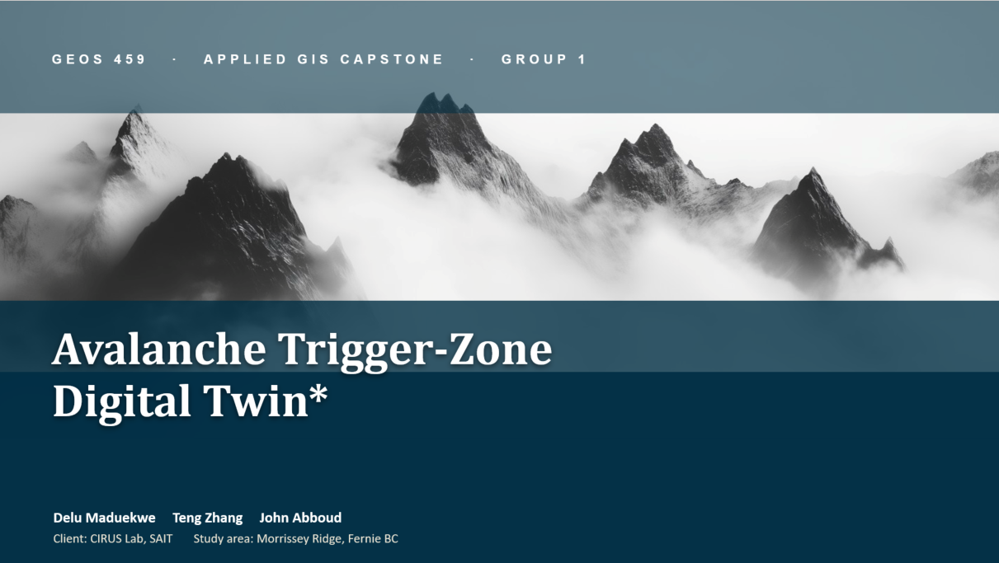
Avalanche Trigger-Zone Digital Twin
Identifying likely avalanche trigger zones from Coal Creek to Morrissey Ridge, near Fernie, BC, to help make future drone-based avalanche control more targeted and safer - for client CIRUS Lab, SAIT.
See project details ↓Web app builds - Experience Builder & Dashboards
An Experience Builder tutorial build and an operational dashboard, both published live on ArcGIS Online - open either one directly, no login required.
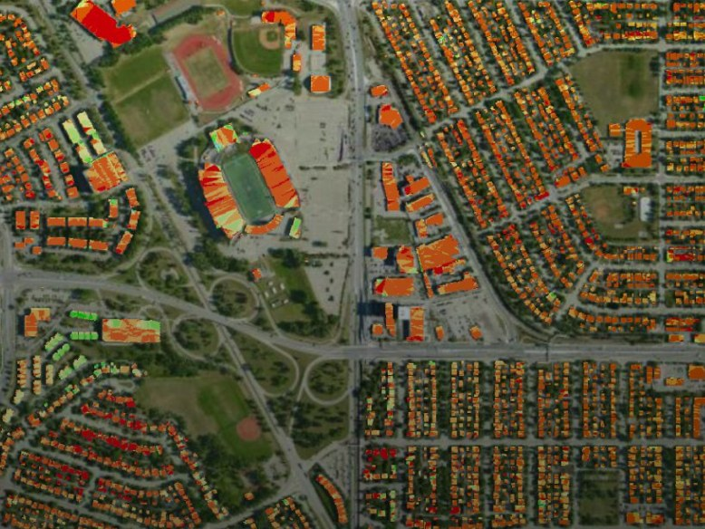
Interactive story map
The semester's capstone deliverable, built in ArcGIS StoryMaps - an interactive narrative combining maps, imagery, and text into a guided geospatial story.
Team: Sanaz · John Abboud
View the story map ↗Coursework
Project work from the BGIS program, organized by semester - cartographic design, spatial analysis, GPS field capture, remote sensing, GIS programming, and the applied capstone.
Semester 1
Four courses across the first semester of the BGIS program - cartographic output, GPS-based field capture, surface modelling, and geoprocessing automation - plus a capstone story map tying the semester's work together.
Interactive story map
The semester's capstone deliverable, built in ArcGIS StoryMaps - an interactive narrative combining maps, imagery, and text into a guided geospatial story.
Team: Sanaz · John Abboud
View the story map ↗GEOS 419 - GIS Data Analysis and Output
Choropleth and proportional symbol maps built to explore demographic and land use patterns.
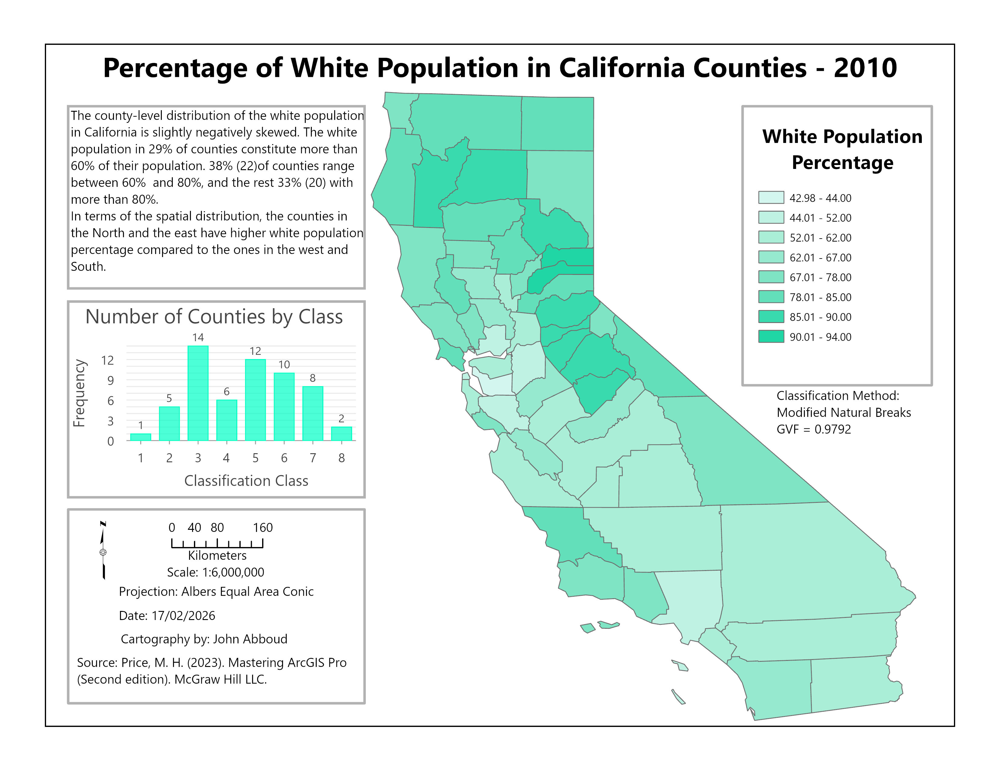
White population percentage - California counties, 2010
Choropleth map classifying California counties by white population share using a modified natural breaks method (GVF 0.9792), with a supporting frequency histogram and spatial trend analysis.
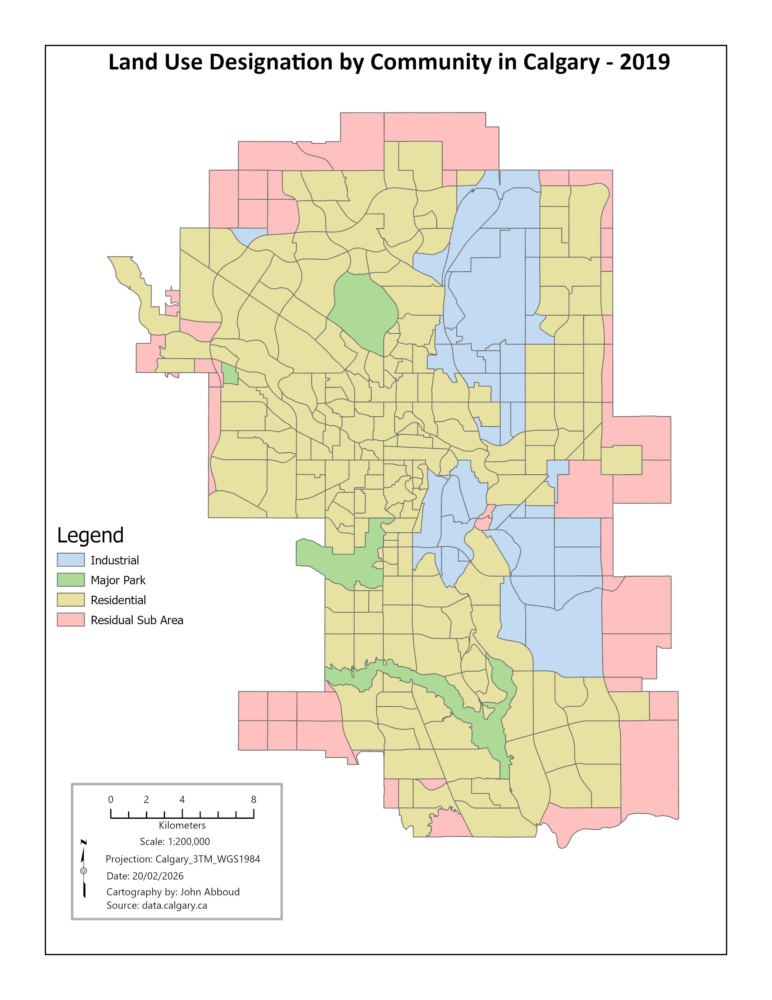
Land use designation by community - Calgary, 2019
Categorical map of Calgary communities classified into residential, industrial, major park, and residual sub-area designations, sourced from the City of Calgary open data portal.
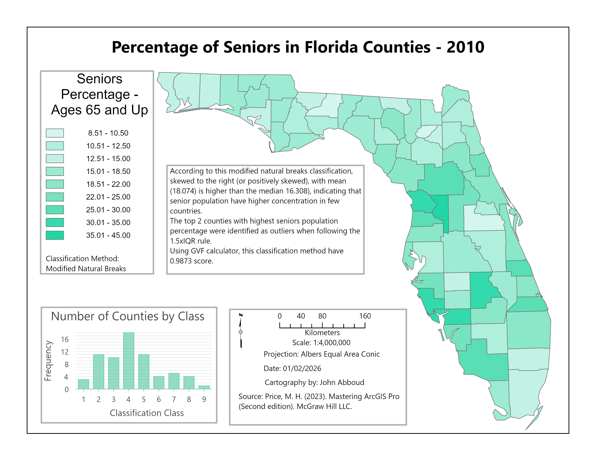
Senior population percentage - Florida counties, 2010
Choropleth map of the 65+ population share by county, with a modified natural breaks classification (GVF 0.9873) and outlier detection using the 1.5×IQR rule.
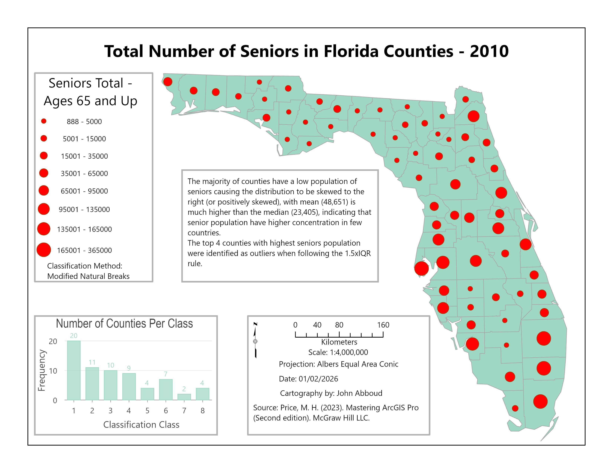
Total senior population - Florida counties, 2010
Companion proportional symbol map to the percentage map above, showing absolute counts of seniors per county and highlighting the counties identified as statistical outliers.
GEOS 409 - GIS Data Capture I
Field data collection with GPS/mobile mapping tools, and raster surface modelling from elevation data.
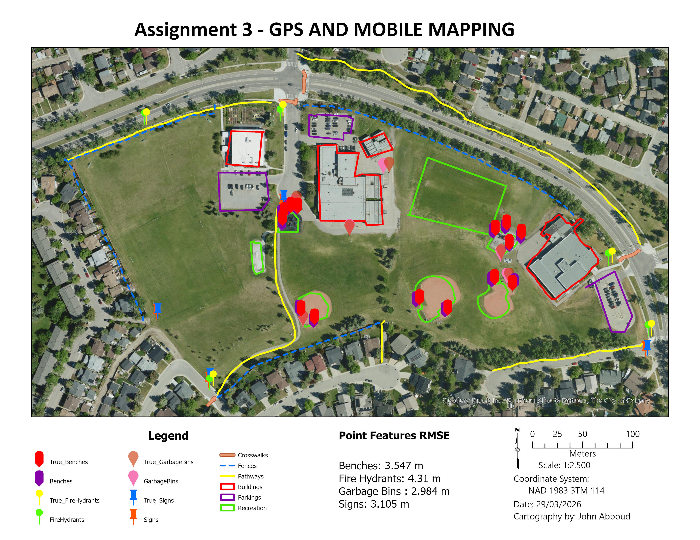
GPS and mobile mapping
Field-collected GPS points and lines (benches, fire hydrants, garbage bins, signs, buildings, recreation areas) compared against reference "true" locations, with RMSE calculated per feature type to assess GPS accuracy.
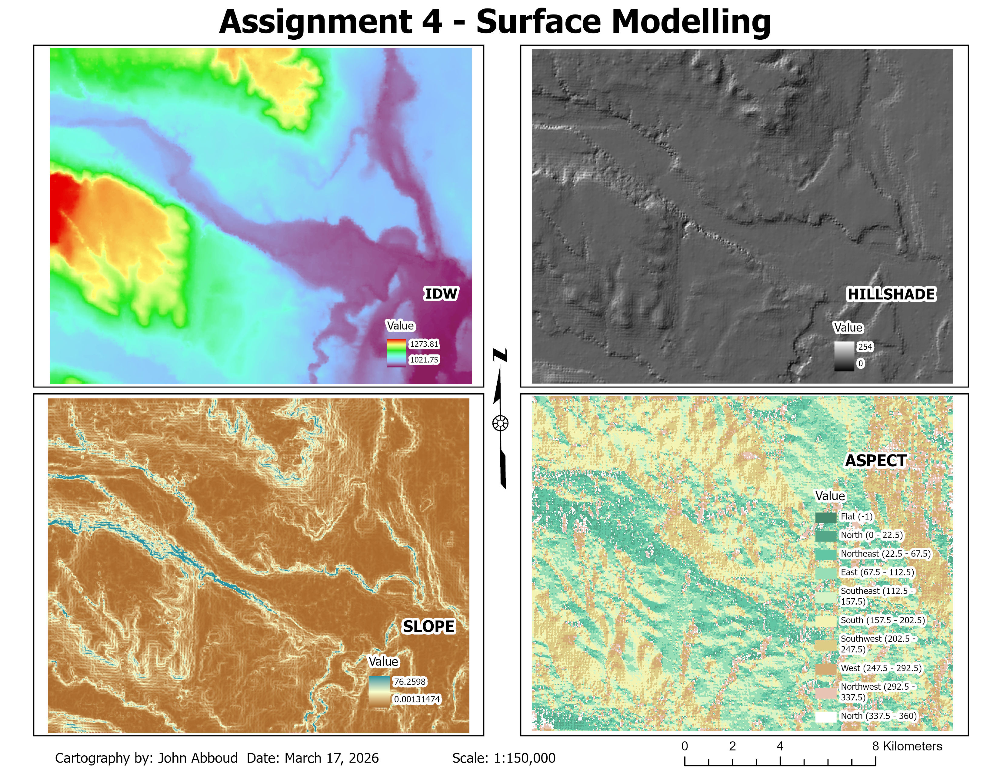
Surface modelling
Four derived terrain surfaces from a single elevation dataset - IDW interpolation, hillshade, slope, and aspect - used to compare how each raster technique reveals different aspects of the landscape.
GEOS 410 - GIS Data Manipulation and Transformation
Survey grid mapping, geoprocessing automation, and format transformation using FME and ModelBuilder.
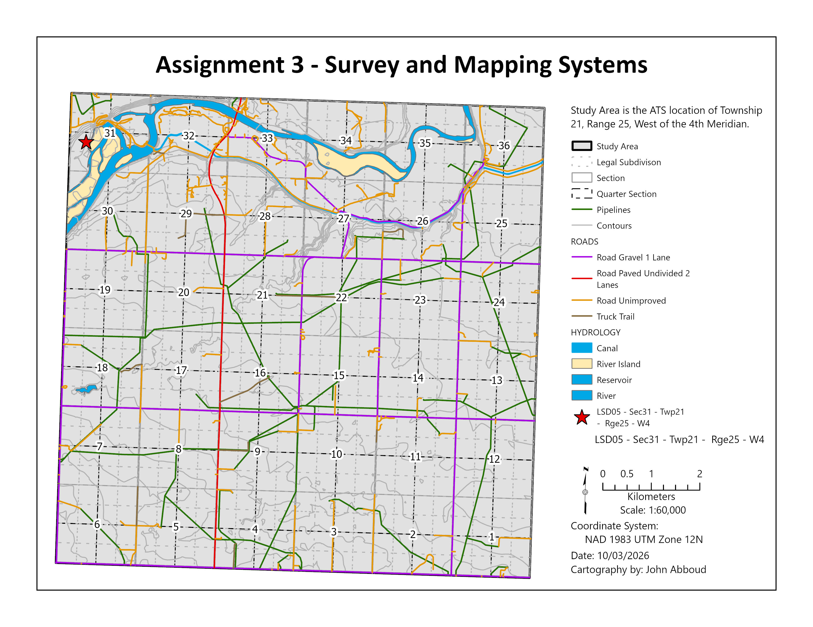
Survey and mapping systems
Map of the Alberta Township System (ATS) grid - townships, sections, and quarter sections - overlaid with roads, hydrology, and pipeline infrastructure for a defined study township.
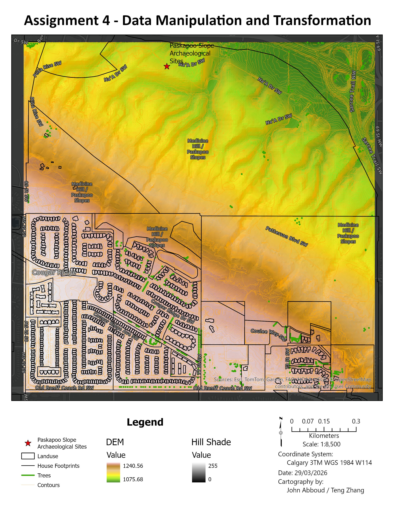
Data manipulation and transformation
Combined DEM and hillshade surface over a Calgary neighbourhood, with house footprints, tree points, land use polygons, and a marked archaeological site - built through a data transformation and clipping workflow.
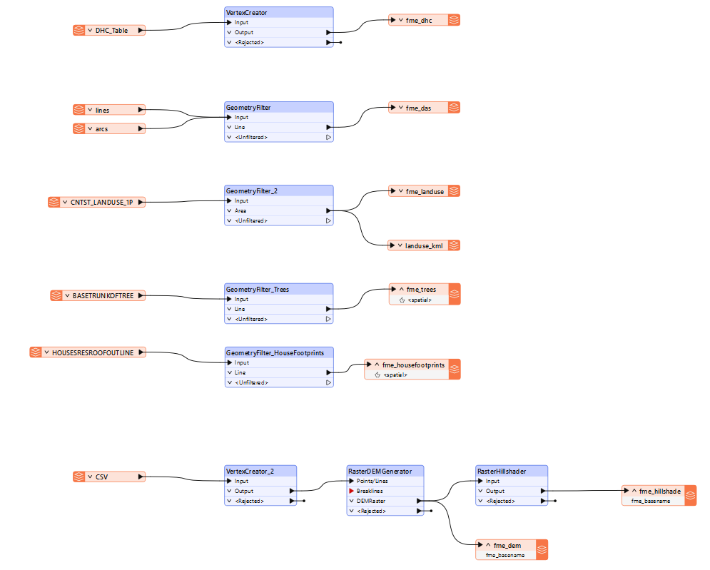
FME data transformation workflow
An FME workspace built to clean and route raw survey datasets - filtering geometry by type, generating a DEM and hillshade raster from CSV elevation points, and exporting standardized feature layers.
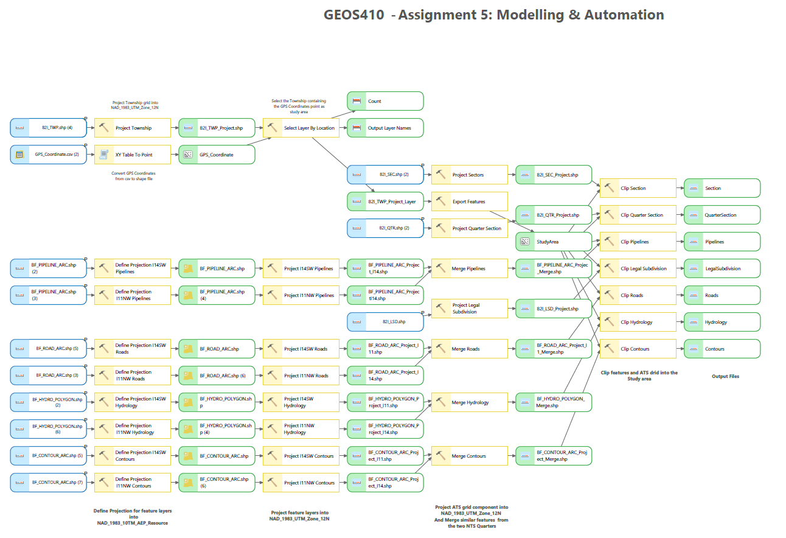
ModelBuilder automation
A ModelBuilder workflow that projects infrastructure layers (pipelines, roads, hydrology, contours) into a common coordinate system, then clips and merges them across two ATS quarters into one study area.
Semester 2
Second semester coursework across five courses - enterprise and web GIS, advanced data capture through remote sensing, GIS programming, cartographic design, and the applied capstone project. Being updated as coursework is completed.
GEOS 450 - Enterprise and Web GIS
Managing enterprise and web-based GIS environments - ArcGIS Enterprise and ArcGIS Online - including internet mapping applications, crowd-sourced and mobile data collection, enterprise geodatabase design, multi-user editing, and API-based customization.
Web app builds - Experience Builder & Dashboards
Work in progress on ArcGIS Enterprise/Online web apps: an Experience Builder tutorial build and a live operational dashboard, both published to ArcGIS Online.
GEOS 451 - GIS Data Capture II
Raster analysis and remote sensing for GIS - grid statistics, passive and active sensing systems, multispectral image processing and classification, remotely piloted aircraft systems (RPAS) data processing, and LiDAR integration.
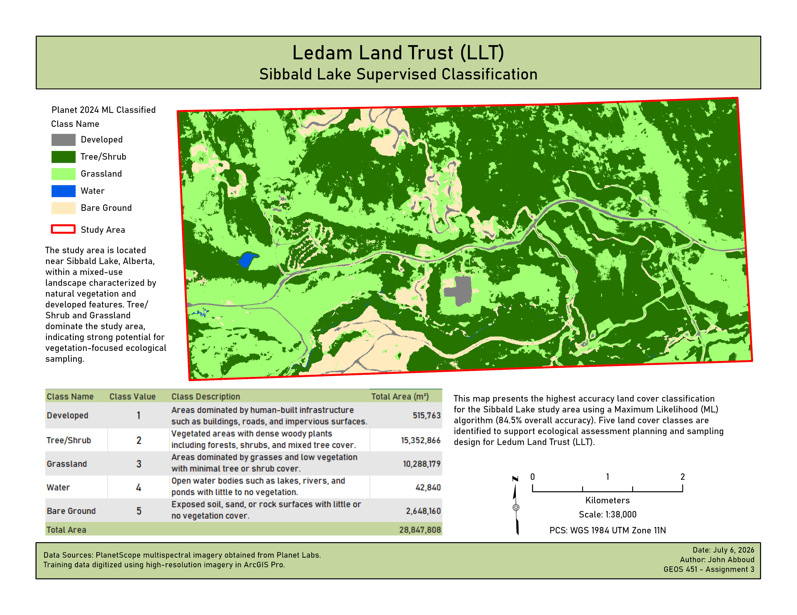
Supervised land cover classification - Sibbald Lake, AB
Maximum Likelihood supervised classification of PlanetScope multispectral imagery into five land cover classes (Developed, Tree/Shrub, Grassland, Water, Bare Ground) for a mixed-use landscape near Sibbald Lake, AB. Training data was digitized from high-resolution imagery in ArcGIS Pro, with the classified output (84.5% overall accuracy) produced to support ecological assessment and sampling design for the Ledam Land Trust.
GEOS 456 - GIS Programming
Python scripting for GIS - from language fundamentals to advanced geoprocessing with ArcPy, spatial data access with cursors, raster analysis through Spatial Analyst, custom tool creation, debugging, and scripted web maps.
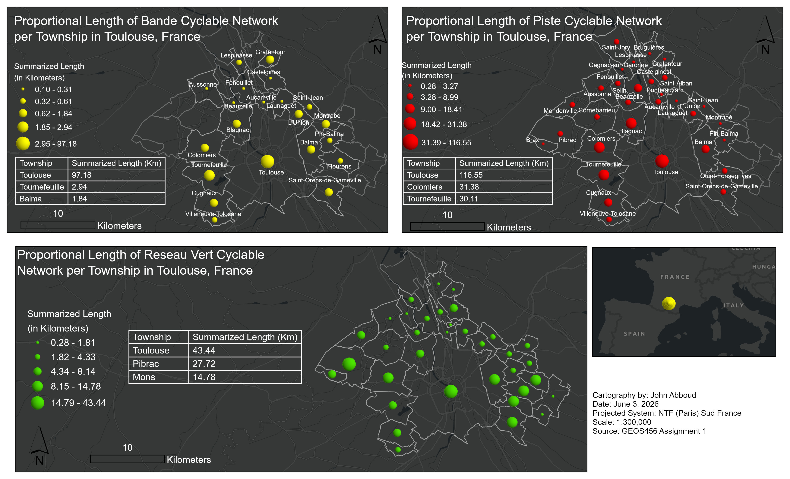
Toulouse cycling network analysis - automated geoprocessing script
An ArcPy script that projects raw commune and cycling-network shapefiles into a common coordinate system (NTF Paris Lambert Sud France), intersects each network by township, and calculates the top 3 townships by network length for the bande cyclable, piste cyclable, and réseau vert cyclable layers. The script checks each intersected feature class's geometry type at run time so it correctly calculates length or area regardless of which layers turn out to be lines or polygons.
View full script
#-------------------------------------------------------------------------------
# Name: GEOS456_Assign01 (CORRECTED REFERENCE VERSION)
# Purpose: To incorporate geoprocessing techniques into high-level
# programming (HLP) language - identify the top 3 townships
# (communes) in Toulouse containing the most cycling network.
#
# Author: John Abboud
# Date: 03/06/2026
#
# NOTE: This is a corrected reference copy made after grading, kept for
# future reference. Original error: line ~135 failed because
# CalculateGeometryAttributes_management was run with "LENGTH" on every
# intersected feature class. The instructor confirmed this fails whenever a
# feature class with a different geometry type (e.g. a polygon) is mixed in
# with polylines, since "LENGTH" is not a valid geometry property for
# polygons. The fix below uses arcpy.Describe().shapeType to check each
# feature class's actual geometry type at run time and calculates LENGTH
# for polylines or AREA for polygons accordingly - so the script adapts
# correctly no matter which input layers turn out to be which geometry type.
#-------------------------------------------------------------------------------
import arcpy, os
# Allow existing outputs to be overwritten
arcpy.env.overwriteOutput = True
# FIX: Set the workspace to the root assignment folder, as required by the
# instructor, so the script can be run directly from C:\GEOS456\Assign01
arcpy.env.workspace = r"C:\GEOS456\Assign01"
root = arcpy.env.workspace
# Path to geodatabase where all outputs will be stored
gdb = os.path.join(root, "Toulouse.gdb")
# Define the coordinate system for projection
projection = arcpy.SpatialReference("NTF (PARIS) Lambert Sud France")
#--------------------------------------------------
# 1. FIND AND PROJECT ALL SHAPEFILES
print("1. RAW data (shapefiles) in the folder:")
# Raw data is stored in two subfolders beneath the root workspace
raw_folders = [
os.path.join(root, "communes"),
os.path.join(root, "reseau-cyclable-et-vert")
]
for folder in raw_folders:
arcpy.env.workspace = folder
fcs = arcpy.ListFeatureClasses()
for fc in fcs:
print(" - " + fc) # print file name
# Create output name for projected feature
out_name = fc.replace(".shp", "_projected")
# Full path to save the projected file inside the geodatabase
out_path = os.path.join(gdb, out_name)
# Run projection tool
arcpy.management.Project(fc, out_path, projection)
print("")
#--------------------------------------------------
# 2. LIST FEATURES INSIDE THE GDB (BEFORE INTERSECT)
# Switch workspace to geodatabase
arcpy.env.workspace = gdb
print("2. Features stored in gdb before intersecting:")
# Get all feature classes in the gdb
fc_list = arcpy.ListFeatureClasses()
for fc in fc_list:
print(" - " + fc)
print("")
#--------------------------------------------------
# 3. SEPARATE NETWORKS AND TOWNSHIPS
networks = [] # will store cycling network layers
township = "" # will store commune layer
for fc in fc_list:
# Select only the cycling/green network layers
if "Cyclable" in fc or "ReseauVert" in fc:
networks.append(fc)
# Identify the township layer (communes)
if "commune" in fc.lower():
township = fc
#--------------------------------------------------
# 4. INTERSECT NETWORKS WITH TOWNSHIPS
# This step splits cycling/green networks by township boundaries
for fc in networks:
out_fc = fc + "_by_commune"
# Intersect tool combines geometry from both layers
arcpy.analysis.Intersect([fc, township], out_fc)
print(fc + " successfully intersected")
print("")
#--------------------------------------------------
# 5. LIST FEATURES AFTER INTERSECT
print("2.Below is the list of features stored in gdb after intersecting:")
fc_list = arcpy.ListFeatureClasses()
for fc in fc_list:
print(" - " + fc)
print("")
#--------------------------------------------------
# 6. ADD A LENGTH/AREA FIELD AND CALCULATE GEOMETRY
#
# FIX: "LENGTH" is only a valid geometry property for polylines - using it
# on a polygon causes a tool error. arcpy.Describe().shapeType is used here
# to check each feature class's actual geometry type before deciding
# whether to calculate LENGTH or AREA, rather than assuming based on name.
intersects = arcpy.ListFeatureClasses("*_by_commune")
# Add a field to each intersected feature class - DOUBLE works for both
# a length value (km) or an area value (sq km)
for fc in intersects:
fcDesc = arcpy.Describe(fc)
if fcDesc.shapeType == "Polygon":
arcpy.management.AddField(fc, "Area_SqKM", "DOUBLE")
print("Area_SqKM field added to " + fc + " (Polygon)")
else:
arcpy.management.AddField(fc, "Length_KM", "DOUBLE")
print("Length_KM field added to " + fc + " (Polyline)")
print("")
# Calculate geometry attributes based on each feature class's shape type
for fc in intersects:
fcDesc = arcpy.Describe(fc)
if fcDesc.shapeType == "Polygon":
arcpy.management.CalculateGeometryAttributes(
fc,
[["Area_SqKM", "AREA"]],
area_unit="SQUARE_KILOMETERS"
)
print("Area_SqKM calculated successfully for " + fc)
else:
arcpy.management.CalculateGeometryAttributes(
fc,
[["Length_KM", "LENGTH"]],
length_unit="KILOMETERS"
)
print("Length_KM calculated successfully for " + fc)
print("")
#--------------------------------------------------
# 7. SUMMARIZE TOTAL LENGTH/AREA PER TOWNSHIP
# Create summary tables (sum of length or area per township)
for fc in intersects:
fcDesc = arcpy.Describe(fc)
out_table = fc + "_sum"
if fcDesc.shapeType == "Polygon":
arcpy.analysis.Statistics(
fc,
out_table,
[["Area_SqKM", "SUM"]],
"libelle"
)
else:
arcpy.analysis.Statistics(
fc,
out_table,
[["Length_KM", "SUM"]],
"libelle"
)
print("")
#--------------------------------------------------
# 8. PRINT TOP 3 TOWNSHIPS FOR EACH NETWORK
print("Below is the summary table of the top 3 townships:")
# Get all summary tables
tables = arcpy.ListTables("*_sum")
for table in tables:
# Recover the original intersected feature class name from the table
# name (table name = fc name + "_sum") so its shape type can be
# checked directly, instead of guessing the field from the layer name
fc_name = table.replace("_sum", "")
fcDesc = arcpy.Describe(fc_name)
if fcDesc.shapeType == "Polygon":
field_name = "SUM_Area_SqKM"
unit_label = "sq km"
else:
field_name = "SUM_Length_KM"
unit_label = "km"
# Assign a readable label based on the table name
if "Bande_Cyclable" in table:
label = "Bande Cyclable"
elif "Piste_Cyclable" in table:
label = "Piste Cyclable"
elif "ReseauVert" in table:
label = "ReseauVert"
else:
label = table
print("\nTop 3 townships - " + label + ":")
rows = []
# Read table values using a search cursor
with arcpy.da.SearchCursor(table, ["libelle", field_name]) as sc:
for row in sc:
rows.append([row[0], row[1]])
# Sort rows manually from highest to lowest
for x in range(len(rows)):
for y in range(x + 1, len(rows)):
if rows[y][1] > rows[x][1]:
temp = rows[x]
rows[x] = rows[y]
rows[y] = temp
# Print the top 3 results only
count = 0
for item in rows:
print(" - {0}: {1:.2f} {2}".format(item[0], item[1], unit_label))
count += 1
if count == 3:
break
print("")
print("Assignment complete!")
#-------------------------------------------------------------------------------
# Sources Consulted
#-------------------------------------------------------------------------------
'''
ArcGIS Pro Documentation:
Project (Data Management)
https://pro.arcgis.com/en/pro-app/latest/tool-reference/data-management/project.htm
Intersect (Analysis)
https://pro.arcgis.com/en/pro-app/latest/tool-reference/analysis/intersect.htm
Add Field (Data Management)
https://pro.arcgis.com/en/pro-app/latest/tool-reference/data-management/add-field.htm
Calculate Geometry Attributes (Data Management)
https://pro.arcgis.com/en/pro-app/latest/tool-reference/data-management/calculate-geometry-attributes.htm
Summary Statistics (Analysis)
https://pro.arcgis.com/en/pro-app/latest/tool-reference/analysis/summary-statistics.htm
ListFeatureClasses (ArcPy)
https://pro.arcgis.com/en/pro-app/latest/arcpy/functions/listfeatureclasses.htm
Describe (ArcPy)
https://pro.arcgis.com/en/pro-app/latest/arcpy/functions/describe.htm
General ArcPy Reference
https://pro.arcgis.com/en/pro-app/latest/arcpy/get-started/what-is-arcpy-.htm
'''ATS/DLS land fabric automation and GPS point location - Alberta
A script that builds a file geodatabase from scratch, importing and projecting NTS 1:20,000 base features (contours, trails, pipelines, powerlines, roads) and the ATS/DLS land fabric (sections, quarter sections, legal subdivisions) into a common projection, defines the study area as the township containing a supplied GPS point, then clips and merges the base feature and land fabric layers to that study area. A search cursor is used to print the full DLS description (LSD-Sec-Twp-Rge-Mer) of the legal subdivision containing the GPS point.
View full script
#-------------------------------------------------------------------------------
# Name: Assignment 2: Geoprocessing for Map Overlays
# Purpose: Automate the conversion and management of NTS base features,
# the ATS/DLS land fabric, and a GPS point into a single file
# geodatabase for use in mapping initiatives.
#
# Author: John Abboud
# Created: 19/06/2026
# Copyright: (c) 456460 2026
#-------------------------------------------------------------------------------
# Import the arcpy module
import arcpy
import os
# Set environment workspace and overwrite properties
arcpy.env.workspace = r"C:\GEOS456\Assign02"
arcpy.env.overwriteOutput = True
# Root project folder - everything below references this location
root = r"C:\GEOS456\Assign02"
gdb = os.path.join(root, "Assignment02.gdb")
# Spatial reference objects used throughout the script
# NAD_1983_10TM_AEP_Resource - the raw Base data's true projection
AEP_10TM = arcpy.SpatialReference(3403)
# NAD_1983_UTM_Zone_12N - the project's target projection
UTM12N = arcpy.SpatialReference(26912)
# Helper function used after every geoprocessing tool
# prints the first and last message returned by the most recently run tool
def print_messages():
msgCount = arcpy.GetMessageCount()
if msgCount > 0:
print(arcpy.GetMessage(0))
print(arcpy.GetMessage(msgCount - 1))
# Create a list of all the assignment datasets prior to importing,
# and describe the data type, geometry and spatial reference of
# each shapefile in the assignment data folder
print("Listing and describing all raw assignment datasets")
print("")
# List of every raw data folder that contains shapefiles for this assignment
raw_folders = [
root,
os.path.join(root, "Base", "82I11NW", "82I11NW"),
os.path.join(root, "Base", "82I14SW"),
os.path.join(root, "DLS")
]
for folder in raw_folders:
arcpy.env.workspace = folder
fcList = arcpy.ListFeatureClasses()
print("Folder:", folder)
for fc in fcList:
fcDesc = arcpy.Describe(fc)
print(" Name:", fc)
print(" Shape Type:", fcDesc.shapeType)
print(" Spatial Reference:", fcDesc.spatialReference.name)
print("")
# Check if the assignment geodatabase already exists.
# If it exists, delete it prior to making a new one.
print("Checking for an existing Assignment02.gdb")
arcpy.env.workspace = root
if arcpy.Exists(gdb):
arcpy.management.Delete(gdb)
print("Existing Assignment02.gdb was found and deleted")
else:
print("No existing Assignment02.gdb was found")
print("")
# Create the file geodatabase and feature datasets to store the data
print("Creating Assignment02.gdb and feature datasets")
# Create the file geodatabase in the Assign02 folder
arcpy.management.CreateFileGDB(root, "Assignment02.gdb")
print_messages()
print("Assignment02.gdb created")
print("")
# Create a feature dataset to hold the DLS / ATS land fabric data
arcpy.management.CreateFeatureDataset(gdb, "DLS", UTM12N)
print_messages()
print("DLS feature dataset created")
print("")
# Create a feature dataset to hold the 1:20,000 Base Features data
arcpy.management.CreateFeatureDataset(gdb, "Base_Features", UTM12N)
print_messages()
print("Base_Features feature dataset created")
print("")
# Convert all assignment data and store it in the geodatabase
print("Importing, projecting, merging and clipping all assignment data")
print("")
# Import and project the GPS point (already in the correct projection,
# so Project is used simply to copy it into the gdb with a clean name)
print("Importing GSP_Pointe.shp (GPS point) to the geodatabase...")
in_gps = os.path.join(root, "GSP_Pointe.shp")
out_gps = os.path.join(gdb, "GPS_Point")
arcpy.management.Project(in_gps, out_gps, UTM12N)
print_messages()
print("GPS point imported")
print("")
# Project the Township grid and identify the Study Area
# (the township that contains the GPS point)
print("Projecting Township grid (82I_TWP.shp) into the geodatabase...")
in_twp = os.path.join(root, "DLS", "82I_TWP.shp")
out_twp = os.path.join(gdb, "raw_TWP")
arcpy.management.Project(in_twp, out_twp, UTM12N)
print_messages()
print("Township grid projected")
print("")
print("Selecting the township that contains the GPS point...")
twp_layer = arcpy.management.MakeFeatureLayer(out_twp, "twp_layer")
gps_layer = arcpy.management.MakeFeatureLayer(out_gps, "gps_layer")
# Select townships that CONTAIN the GPS point
arcpy.management.SelectLayerByLocation(twp_layer, "CONTAINS", gps_layer, "", "NEW_SELECTION")
print_messages()
print("Township containing GPS point selected")
print("")
print("Exporting the selected township as the Study_Area...")
study_area = os.path.join(gdb, "DLS", "Study_Area")
arcpy.conversion.ExportFeatures(twp_layer, study_area)
print_messages()
print("Study_Area created in the DLS feature dataset")
print("")
# Remove the intermediate, non-essential township data
arcpy.management.Delete(out_twp)
print("Intermediate raw_TWP deleted")
print("")
# Project the remaining ATS/DLS land fabric (Sections, Quarter Sections,
# Legal Subdivisions) and clip each one to the Study_Area.
# Note: Road Allowance (RA) is intentionally excluded per the assignment.
print("Processing DLS / ATS land fabric layers...")
print("")
# Dictionary of DLS shapefiles to process: {raw shapefile name : output name}
dls_layers = {
"82I_SEC.shp": "Section",
"82I_QTR.shp": "QuarterSection",
"82I_LSD.shp": "LegalSubdivision"
}
for raw_name, out_name in dls_layers.items():
print("Processing " + out_name + "...")
# Project the raw shapefile into the geodatabase (NAD 1983 UTM Zone 12N)
in_shp = os.path.join(root, "DLS", raw_name)
out_projected = os.path.join(gdb, "raw_" + out_name)
arcpy.management.Project(in_shp, out_projected, UTM12N)
print_messages()
# Clip the projected layer to the Study_Area so it does not extend
# beyond the boundary of the study area
out_clip = os.path.join(gdb, "DLS", out_name)
arcpy.analysis.Clip(out_projected, study_area, out_clip)
print_messages()
print(out_name + " clipped to Study_Area")
# Remove the intermediate, non-essential projected data
arcpy.management.Delete(out_projected)
print("Intermediate raw_" + out_name + " deleted")
print("")
# Process the 1:20,000 Base Features.
# Each base feature exists as two shapefiles (one per NTS quarter:
# 82I11NW and 82I14SW) that are missing a coordinate system.
# Workflow:
# 1. Define Projection -> NAD_1983_10TM_AEP_Resource
# 2. Project -> NAD_1983_UTM_Zone_12N
# 3. Merge the two NTS quarters into one feature class
# 4. Clip the merged feature class to the Study_Area
print("Processing 1:20,000 Base Features...")
print("")
# Path to each NTS quarter's raw Base Feature shapefiles
nts_82I11NW = os.path.join(root, "Base", "82I11NW", "82I11NW")
nts_82I14SW = os.path.join(root, "Base", "82I14SW")
# Dictionary of base feature shapefiles to process:
# {raw shapefile name : output name in Base_Features}
base_features = {
"BF_CONTOUR_ARC.shp": "Contours",
"BF_CUT_TRAIL_ARC.shp": "Trails",
"BF_PIPELINE_ARC.shp": "Pipelines",
"BF_POWERLINE_ARC.shp": "Powerlines",
"BF_ROAD_ARC.shp": "Roads"
}
for raw_name, out_name in base_features.items():
print("Processing " + out_name + "...")
# 82I11NW quarter
in_11nw = os.path.join(nts_82I11NW, raw_name)
defined_11nw = os.path.join(gdb, out_name + "_82I11NW_Unprojected")
# Import the raw shapefile into the gdb (the source has no projection)
arcpy.conversion.FeatureClassToFeatureClass(in_11nw, gdb, out_name + "_82I11NW_Unprojected")
# Define the projection as NAD_1983_10TM_AEP_Resource
arcpy.management.DefineProjection(defined_11nw, AEP_10TM)
# Project into NAD_1983_UTM_Zone_12N
projected_11nw = os.path.join(gdb, out_name + "_82I11NW_Projected")
arcpy.management.Project(defined_11nw, projected_11nw, UTM12N)
print_messages()
# 82I14SW quarter
in_14sw = os.path.join(nts_82I14SW, raw_name)
defined_14sw = os.path.join(gdb, out_name + "_82I14SW_Unprojected")
arcpy.conversion.FeatureClassToFeatureClass(in_14sw, gdb, out_name + "_82I14SW_Unprojected")
arcpy.management.DefineProjection(defined_14sw, AEP_10TM)
projected_14sw = os.path.join(gdb, out_name + "_82I14SW_Projected")
arcpy.management.Project(defined_14sw, projected_14sw, UTM12N)
print_messages()
# Merge the two projected NTS quarters into a single feature class
merged = os.path.join(gdb, out_name + "_Merged")
arcpy.management.Merge([projected_11nw, projected_14sw], merged)
print_messages()
# Clip the merged feature class to the Study_Area
out_clip = os.path.join(gdb, "Base_Features", out_name)
arcpy.analysis.Clip(merged, study_area, out_clip)
print_messages()
print(out_name + " merged and clipped to Study_Area")
# Remove all intermediate, non-essential data
arcpy.management.Delete(defined_11nw)
arcpy.management.Delete(projected_11nw)
arcpy.management.Delete(defined_14sw)
arcpy.management.Delete(projected_14sw)
arcpy.management.Delete(merged)
print("Intermediate " + out_name + " data deleted")
print("")
# List the features within each feature dataset and describe the
# final spatial reference of each feature class
print("Final feature class list and spatial reference for each dataset")
print("")
final_locations = [
gdb,
os.path.join(gdb, "DLS"),
os.path.join(gdb, "Base_Features")
]
for location in final_locations:
arcpy.env.workspace = location
fcList = arcpy.ListFeatureClasses()
print("Location:", location)
for fc in fcList:
fcDesc = arcpy.Describe(fc)
print(" Name:", fc)
print(" Shape Type:", fcDesc.shapeType)
print(" Spatial Reference:", fcDesc.spatialReference.name)
print("")
# Only the final datasets are stored in the geodatabase.
# All intermediate and non-essential features were already removed
print("Intermediate and non-essential data removed")
print("")
# Use a cursor to identify and print the full DLS description of the
# single Legal Subdivision that the GPS point falls within
print("Printing the DLS description for the LSD containing the GPS point")
print("")
lsd_fc = os.path.join(gdb, "DLS", "LegalSubdivision")
# Make feature layers so the LSD that contains the GPS point can be selected
lsd_layer = arcpy.management.MakeFeatureLayer(lsd_fc, "lsd_layer")
gps_layer2 = arcpy.management.MakeFeatureLayer(out_gps, "gps_layer2")
# Select the single LSD polygon that CONTAINS the GPS point
arcpy.management.SelectLayerByLocation(lsd_layer, "CONTAINS", gps_layer2, "", "NEW_SELECTION")
print_messages()
print("LSD containing the GPS point selected")
print("")
# Use a search cursor on the selected LSD only to read the fields needed
# to build the DLS description. Field names follow the standard ATS schema
found = False
with arcpy.da.SearchCursor(lsd_layer, ["LSD", "SEC", "TWP", "RGE", "MER"]) as cursor:
for row in cursor:
found = True
lsd, sec, twp, rge, mer = row
print("LSD" + str(lsd).zfill(2) + " - Sec" + str(sec).zfill(2) + " - Twp" + str(twp)
+ " - Rge" + str(rge) + " - W" + str(mer))
# Defensive check in case the GPS point does not fall within any LSD
if not found:
print("No LSD was found containing the GPS point - check the GPS point location")
print("")
# Assignment complete :)
print("Script complete - Assignment02.gdb has been created at " + root)
'''
Sources Consulted:
An Overview of ArcPy functions
https://pro.arcgis.com/en/pro-app/latest/arcpy/functions/alphabetical-list-of-arcpy-functions.htm
Clip (Analysis)
https://pro.arcgis.com/en/pro-app/latest/tool-reference/analysis/clip.htm
Create Feature Dataset (Data Management)
https://pro.arcgis.com/en/pro-app/latest/tool-reference/data-management/create-feature-dataset.htm
Create File GDB (Data Management)
https://pro.arcgis.com/en/pro-app/latest/tool-reference/data-management/create-file-gdb.htm
Define Projection (Data Management)
https://pro.arcgis.com/en/pro-app/latest/tool-reference/data-management/define-projection.htm
Delete (Data Management)
https://pro.arcgis.com/en/pro-app/latest/tool-reference/data-management/delete.htm
Describe
https://pro.arcgis.com/en/pro-app/latest/arcpy/functions/describe.htm
Exists
https://pro.arcgis.com/en/pro-app/latest/arcpy/functions/exists.htm
Export Features (Conversion)
https://pro.arcgis.com/en/pro-app/latest/tool-reference/conversion/export-features.htm
Feature Class To Feature Class (Conversion)
https://pro.arcgis.com/en/pro-app/latest/tool-reference/conversion/feature-class-to-feature-class.htm
GetMessage / GetMessageCount
https://pro.arcgis.com/en/pro-app/latest/arcpy/functions/getmessage.htm
Introduction to ArcPy
https://pro.arcgis.com/en/pro-app/latest/arcpy/get-started/what-is-arcpy-.htm
ListFeatureClasses
https://pro.arcgis.com/en/pro-app/latest/arcpy/functions/listfeatureclasses.htm
Make Feature Layer (Data Management)
https://pro.arcgis.com/en/pro-app/latest/tool-reference/data-management/make-feature-layer.htm
Merge (Data Management)
https://pro.arcgis.com/en/pro-app/latest/tool-reference/data-management/merge.htm
Project (Data Management)
https://pro.arcgis.com/en/pro-app/latest/tool-reference/data-management/project.htm
SearchCursor
https://pro.arcgis.com/en/pro-app/latest/arcpy/data-access/searchcursor-class.htm
Select Layer By Location (Data Management)
https://pro.arcgis.com/en/pro-app/latest/tool-reference/data-management/select-layer-by-location.htm
SpatialReference
https://pro.arcgis.com/en/pro-app/latest/arcpy/classes/spatialreference.htm
'''GEOS 457 - Cartography and Geovisualization
Thematic mapping and design theory - choropleth, graduated/proportional symbol, dot density, isarithmic, and bivariate maps, plus 3D maps, map animation, cartograms, flow maps, and colour theory for cartographic design.
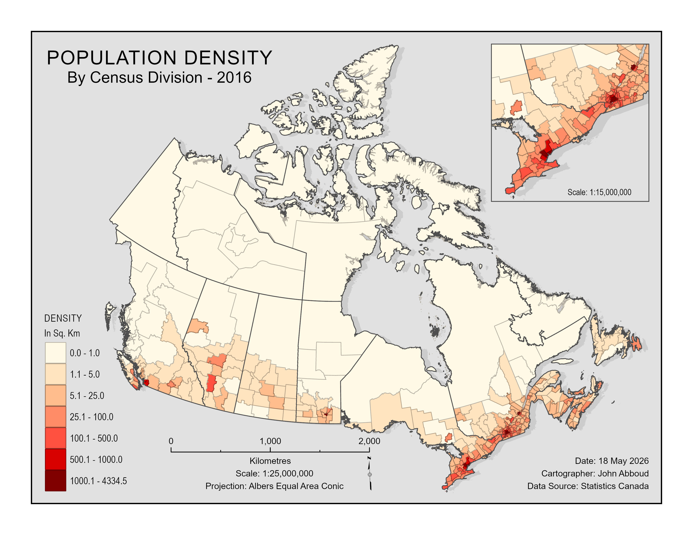
Population density by census division - Canada, 2016
Choropleth map classifying census divisions across Canada by population density (Albers Equal Area Conic projection), with a detailed inset of southern Ontario to show density patterns in the country's most densely populated region at a larger scale.
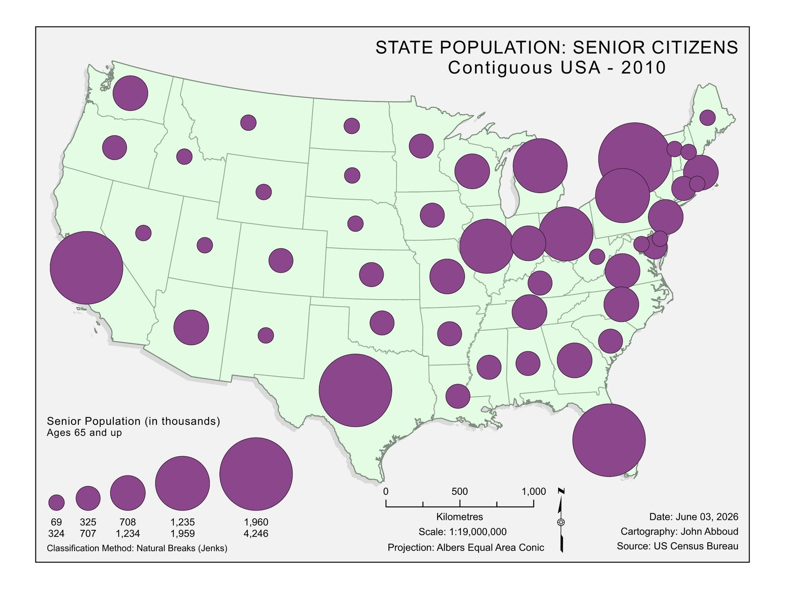
Senior population by state - proportional symbols, USA 2010
Proportional symbol map sizing each state by its population of seniors aged 65 and up, classified using the Natural Breaks (Jenks) method to group states into comparable symbol-size ranges.
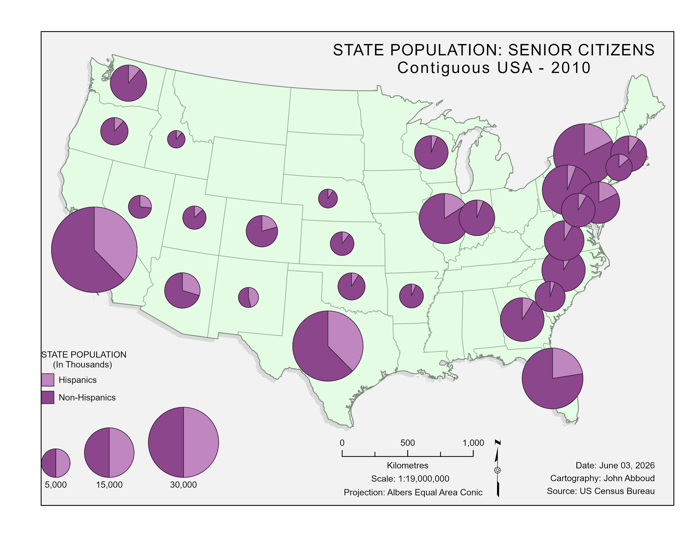
Senior population composition by state - pie charts, USA 2010
Proportional pie chart map building on the previous symbol map, sizing each state's pie by total senior population while splitting the chart into Hispanic and non-Hispanic shares - combining magnitude and composition in a single symbol.
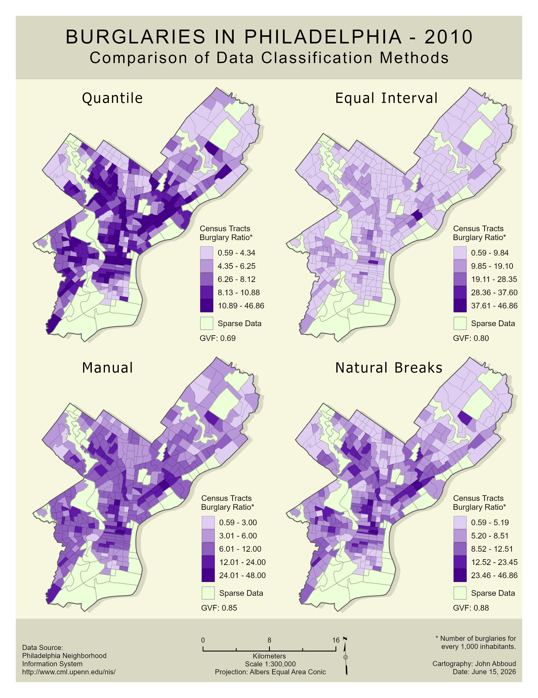
Burglary rate classification methods comparison - Philadelphia, 2010
A four-panel comparison of the same burglary-rate-per-1,000-residents dataset mapped with quantile, equal interval, manual, and natural breaks classification, evaluated using Goodness of Variance Fit (GVF) to show how classification choice changes the map's message even when the underlying data doesn't change.
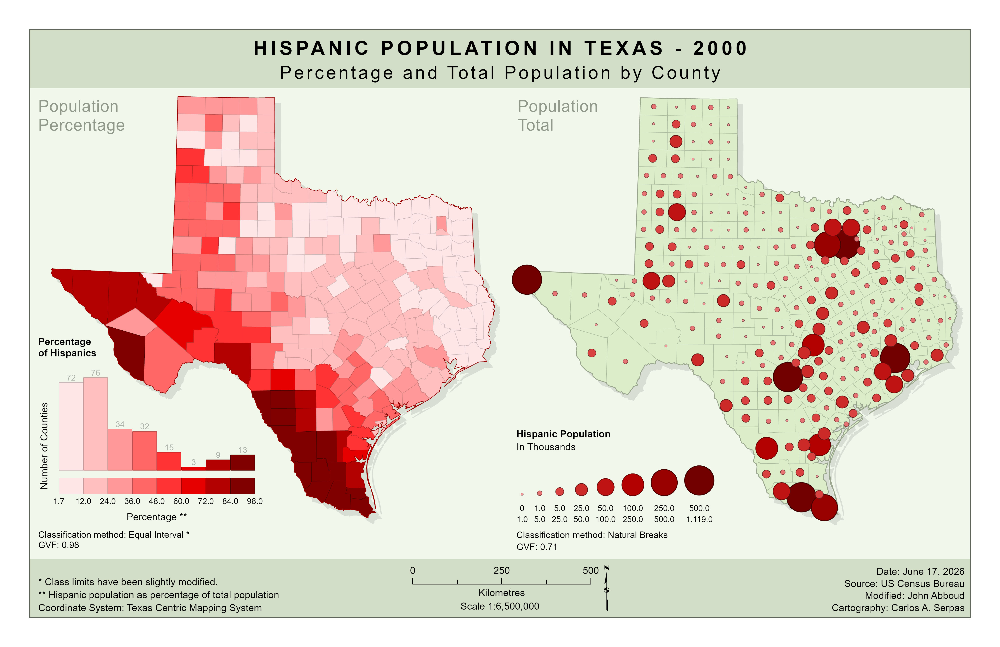
Hispanic population distribution - Texas counties, 2000
Paired choropleth and proportional symbol maps showing Hispanic population as a percentage of total population alongside absolute Hispanic population totals by county, illustrating how the same demographic pattern can read very differently depending on whether it's normalized or shown as a raw count.
GEOS 459 - Applied GIS Capstone Project
A full GIS project lifecycle for a real business challenge - project planning, data capture and management, spatial analysis, output design, client presentation, and project closure.
Avalanche Trigger-Zone Digital Twin*
An in-progress group capstone project focused on the Coal Creek to Morrissey Ridge study area, just southeast of Fernie, British Columbia. The goal is to help identify where avalanche trigger zones may be located, so that future drone-based avalanche control planning can be more targeted and safer.
Resume
Before starting the BGIS program, I spent over 15 years working as an electronics and instrumentation technologist across aerospace, oilfield, and utility industries. That background in troubleshooting, precision testing, and technical documentation now carries over into GIS data quality and field work.
Education
Bachelor of Applied Technology, Geographic Information Systems
- Coursework in cartographic design, spatial analysis, geodatabase design, GPS field data capture, and geoprocessing automation (FME, ModelBuilder)
Electronics Engineering Technology Diploma
- TAC-accredited program covering circuit design, analysis, and troubleshooting; digital and analog electronics; microprocessor systems; wireless communications; and automated test and measurement
- Completed a capstone project applying research and design skills to a proposed engineering solution
Certification
Certified Engineering Technologist (C.E.T.)
Experience
ILI Field Technician
- Performed infield and shop-based maintenance, repairs, and cleaning on pipeline in-line inspection tools
- Travelled to remote sites to prepare inspection tools for surveys and advised on conditions affecting data quality
Electronics Repair Technician
- Tested, repaired, and maintained CF-18 avionics systems to component level using automated test equipment and approved repair schemes
- Calibrated test equipment to OEM specifications and maintained documentation under ISO 9001/AS9100 and Airworthiness standards
Wireline Electronics Technologist III
- Diagnosed and repaired electronic and mechanical faults in wireline tools, performing preventive, corrective, and calibration maintenance
- Participated in root cause analysis, trained new hires, and managed spare parts inventory and on-call support
Electronic Bench Repair Technician
- Calibrated, repaired, and tested gas instruments and pipe locators, documenting all work for traceability
Electronics Technologist
- Assembled, inspected, and tested electronic circuit boards through soldering and mechanical assembly
Skills & tools
A working list of software and concepts covered so far. Edit freely as your toolkit grows.
GIS software
- ArcGIS Pro
- QGIS
- ArcGIS Online
Spatial analysis
- Coordinate systems & projections
- Spatial joins & queries
- Geodatabase design
Data & office
- Python
- SQL
- Excel
- Cartographic design
Professional & language
- Troubleshooting & problem-solving
- Technical documentation
- English & Arabic (fluent), French (advanced)